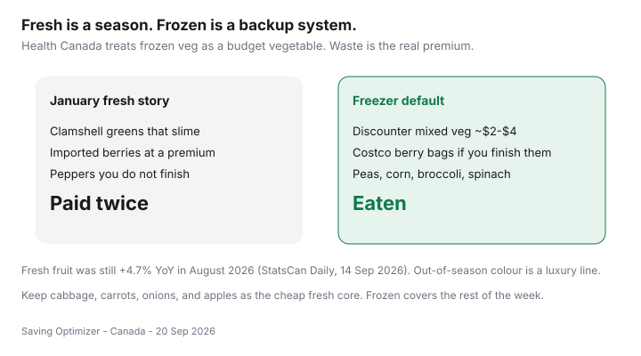

Food & Groceries · Canada
Frozen vs fresh produce in Canada: when frozen wins on price and waste
Households overbuy “fresh” in January, watch it slime, then decide they cannot afford vegetables. The expensive part was the waste, not the peas. In Canada, out-of-season colour is a luxury line. Frozen mixed veg at a discounter is dinner. Health Canada’s budget-shopping pages already treat frozen vegetables as a normal protein-and-veg plate, not a consolation prize.
This guide is seasonal price framing, a freezer staple list, and when Costco bags beat a 1 kg discounter pack. It is not a nutrition lecture. Fresh fruit was still +4.7% year over year in August 2026 while food from stores overall was +2.8% (Statistics Canada Daily, 14 Sep 2026).
Disclosure: A Costco membership is an optional offer type if bulk frozen actually fits your freezer and you already use the warehouse. Saving Optimizer may earn a commission if we later add partner links. No partnership is claimed with Costco or grocers. Discounter bags work without a membership.
Key takeaways
- Frozen wins when fresh is out of season, overpriced, or likely to spoil. Fresh wins when it is in season and you will finish it.
- Keep a cheap fresh core: cabbage, carrots, onions, apples. Let the freezer cover the rest of the week.
- August 2026: fresh fruit still +4.7% year over year (StatsCan Daily, 14 Sep 2026).
- Costco berry and veg bags win only if you finish them. Otherwise the discounter 1 kg is the system.
- Wilted spring mix is not a virtue. Peas you actually ate are.
Nutrition myths vs budget reality
Frozen vegetables are picked and frozen quickly. They are a legitimate Canada Food Guide vegetable. A clamshell of spring mix that lasted 36 hours in a warm apartment is not a nutrition upgrade. If you have a clinical diet, talk to a dietitian — then still shop the unit price.

Out-of-season fresh premiums
January blueberries, March tomatoes, and greenhouse herbs in tiny packs are how a “healthy” cart explodes. Check $/100 g against the frozen bag. If the fresh premium is 2–3× and you might not finish it, the bag wins. Summer local berries you will eat in three days are the opposite case — buy them, skip the freezer snobbery.
Independent markets can reset this in-season — ethnic grocers — but a tired imported pile is still a tired imported pile.
Best freezer staples for weeknight cooking
| Item | Why it earns space | Watch-outs |
|---|---|---|
| Mixed veg / peas / corn | Sides and fried rice | Sauce-heavy “skillets” cost more per gram |
| Broccoli / California mix | Sheet pans with flyer chicken | Ice glaze is water you paid for — check the bag |
| Chopped spinach | Eggs, dal, pasta | Squeeze water or dinners get soggy |
| Berries | Yogurt and oats | Costco size only if breakfast is a habit |
| Edamame or frozen beans | Protein stretch | Still compare to dry pulses |
Costco vs discounter frozen comparisons
Warehouse bags win on $/kg when Gold Star already pays its way and the freezer is not a black hole. They lose when you buy 2.5 kg of mango because it was there. Discounter 750 g–1 kg bags are the default for a $300-month or small-apartment household. Membership math: is Costco worth it? and the cart split.
Reducing produce waste with a frozen backup
- Buy a small fresh core you will see on the counter: cabbage, carrots, onions, maybe apples.
- Keep two frozen veg bags so a missed market trip is not a takeout night.
- If fresh greens look tired on day two, cook them that night or stop buying that format.
- Do not “save” four clamshells because they were on an end cap — impulse playbook.
- Put frozen veg on the meal-prep sheet so they leave the freezer — meal prep.
Waste is a price: a $3.50 clamshell that is half-compost cost $7/edible 100 g. The $2.50 frozen bag you emptied did not.
Sample freezer produce list
Copy this onto the staples side of your reusable list:
- 1 bag mixed vegetables
- 1 bag broccoli or cauliflower
- 1 bag peas or corn
- 1 bag spinach
- 1 bag berries only if yogurt or oats happen most mornings
That is enough to sit beside lentils or sale chicken without performing summer in February. Waste systems: cut food waste.
Sources & date stamps
- Health Canada, Healthy eating on a budget — frozen and canned vegetables are in-scope for a grocery plan (canada.ca; used 20 Sep 2026).
- Statistics Canada Daily, 14 Sep 2026: food from stores +2.8%; fresh fruit +4.7% year over year in August 2026.
- Love Food Hate Waste Canada planning guidance — buy what you will eat (used 20 Sep 2026).
Frequently asked questions
Is frozen produce less nutritious than fresh?
Often not in a way that should decide the grocery budget. Frozen is typically picked ripe and frozen quickly. Wilted “fresh” in your crisper is the worse plate. This is not medical advice; it is waste and price advice.
When is fresh still the better buy in Canada?
In-season local produce you will finish: summer berries you eat this week, autumn apples, winter cabbage and carrots, a good on-sale pepper. Out-of-season clamshells and imported berries are usually a luxury line.
Costco or discounter for frozen veg?
Costco bags win on $/kg if you have a membership and freezer space and you will finish them. Discounter 1 kg mixed veg is the default for everyone else. Do not open a Gold Star for peas alone.
How does frozen cut food waste?
You take what you need. The rest stays frozen. Fresh greens that slime on day four are a second tax on 2026 prices.
What should I keep in the freezer by default?
Peas, corn, broccoli or mixed veg, spinach, and a berry bag if you eat breakfast yogurt. That list covers weeknights when fresh looks expensive or tired.